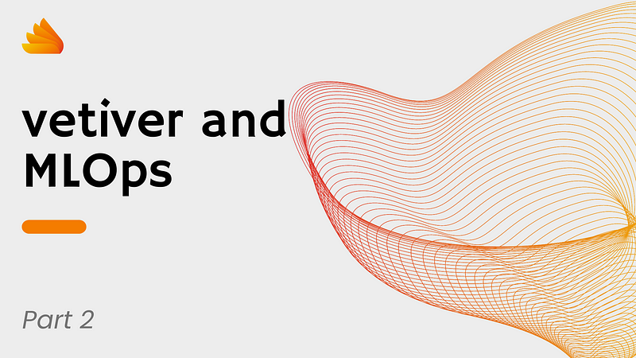
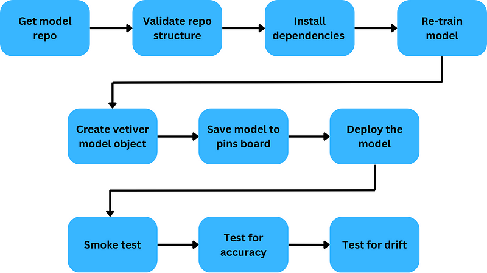

--logs
|--deployment
| └--YYYY-MM-DD.log
|--performance
| └--YYYY-MM-DD.log
|--requests
| └--YYYY-MM-DD.log
└--responses
└--YYYY-MM-DD.log
This is the second article in a series about building an MLOps solution with the {vetiver} R (and Python package). It is recommended that you read the first part before proceeding with this article.
Introduction
In the previous article, we looked at the overall design of our solution and the setup of the model and the model code. In this article, we will focus on the deployment of the model.
An MLOps deployment script should:
- Be triggered automatically by changes in the code base
- Log events
- Validate the model from two points of view:
- Technical: Can we actually build and call the model? Do we have all the dependencies?
- Statistical: Does the model work as intended? Are the results correct? Is there any bias, etc.?
- Deploy the model to the target environment
- Smoke test the deployment
In the rest of the article, we will see how we can implement these steps in R.
Overview
The deployment script is an R markdown. We chose an R markdown because:
- It can be written in R, and we want to build an R-only solution.
- It can show a report with results for the different steps of the deployment
- When deployed to rsconnect, it can be triggered manually, scheduled, or even automatically through connections with repository hooks.
Every step of the pipeline is wrapped within a tryCatch. This is to ensure we capture and log any error. Furthermore, if any of the steps fails (up until the deployment step), then we stop the pipeline: we do not deploy a broken version of the model.
What we do not do in this example, but that you should consider in your real-life use case, is what happens if any of the post-deployment steps fails: smoke tests, accuracy, drift. Should you revert back to the previous working version? Should you run all your tests in a separate environment (such as a container), and only push to the final target deployment environment after those tests are successful? The answer to these questions, together with your organization’s skillset and infrastructure, determines the best course of action. At the very least, the approach in this example will immediately flag the issue, so a developer can take actions. But there might be some downtime.
Another thing you want to implement is some sort of active notification for any failure or success of the pipeline. In this example, we assume that the developer is looking at the pipeline R markdown and its logs. In reality, you should send notifications such as emails to any relevant stakeholders to keep them in the loop. This can be easily achieved when you deploy the R markdown in rsconnect as you can set up a list of email recipients when the markdown is knitted.
Trigger
Ideally, you want the deployment to be triggered automatically by repository events. In our case, we reduce the complexity and increase the reproducibility of the example by enabling only manual triggering, i.e., we knit the markdown from RStudio.
Logs
Logs are produced by the R package log4r. In this example, we define the log objects in the R markdown. In a real-life scenario, you will want to create a package that can be shared across multiple deployment scripts.
Logs are saved in a central folder which will also store, in different subfolders, the logs for the monitoring part. Each day is saved in its own log file.
This log folder is saved on the local machine while you play with the example, but it will be a location in the server hosting rsconnect when deployed. You might want to add extra security as restricting the access to the folder and encrypting the log since these might contain PII information, particularly for the monitoring part.
Note that this log solution does not scale very well if you have a large volume of logs. You might want to consider faster storage and faster log processing, for example, by using the ELK framework.
Sys.setenv('deploymentID' = sample(seq(1,1e6), 1))
my_layout <- function(level, ...) {
paste0(level,
" [", format(Sys.time()), "] [", Sys.getenv('deploymentID'), "] ",
..., "\\\\n",
collapse = "")}
logger <- create.logger(
logfile = here::here('logs', 'deployment',
paste0(Sys.Date(), "_logfile.log")),
level = "DEBUG")
logger <- logger(
appenders = file_appender(file = here::here('logs', 'deployment',
paste0(Sys.Date(),
"_logfile.log")),
layout = my_layout))The workflow
Our first task is to rebuild the model. To do this, we follow this workflow:

All the steps in our MLOps pipeline.
Get the model repo
In this example, all of our code is in one repo. Therefore, this step simply copies the model code from one folder to another. In a real-life example, you will want to clone the repo containing the model code into the pipeline workflow, and not keep everything in a single repo.
# This just mocks cloning the repo with the model code
library('here')
info(logger, 'Start new deployment')
file.copy(from = here::here('model_dev'),
to = here::here('deployment'),
overwrite = TRUE,
recursive = TRUE)
# Just for reproducibility, I nuke my local board here
board <- pins::board_local()
allPins <- board %>% pins::pin_list()
for(thisPin in allPins){
board %>% pins::pin_delete(thisPin)}
# An I recreate the basic data
source(here::here('deployment', 'model_dev', 'R', '00_prepare_raw_data.R'))
info(logger, 'Repo cloned')Validate the structure of the cloned project
We do need to make sure we have certain folders and files. For instance, we check that we have a file to retrain the model and a {vetiver} model card. In a real-life example, you might also want to check that the code base has a renv.lock file.
requiredFiles <- c('R/01_model_dev.R', 'model_card/model_card.Rmd')
allFiles <- list.files(here::here('model_dev'), recursive = TRUE)
if(!all(requiredFiles %in% allFiles)){
errMessage <- paste0('Missing files: ',
paste0(requiredFiles[!requiredFiles %in% allFiles],
collapse = ', '),
collapse = '')
fatal(logger, errMessage)
stop(errMessage)
}
info(logger, 'All files found')Install dependencies
This simply restores the {renv} library. Once again, in this example it is superfluous as we run everything from the same repo, but in real-life you will likely need to do this.
info(logger, 'Restoring renv')
tryCatch({
renv::restore()
},
error = function(errMessage){
fatal(logger, errMessage)
stop(errMessage)
}
)
info(logger, 'renv restored successfully')If your model code base has unit tests, this is a good time to run them.
Re-train the model
We might want to do this if we have different training data in this environment. On the other hand, we do not want to do this if the model is a complex one that takes a lot of time and resources to train. In that case, we would use the trained model directly, for instance, by using the rds (or pickle) file.
info(logger, 'Training model')
tryCatch({
source(here::here('deployment', 'model_dev', 'R', '01_model_dev.R'))
},
error = function(errMessage){
fatal(logger, errMessage)
stop(errMessage)
}
)
info(logger, 'Model trained')Convert the model into a vetiver model object
Having a {vetiver} object helps with reproducibility, and it allows to quickly spin up a plumber API to deploy it and a dashboard for monitoring.
info(logger, 'Create vetiver object')
tryCatch({
vetiver_flights_fit <-
vetiver::vetiver_model(model = flights_fit,
model_name = 'flights_fit',
description = 'Flights model',
metadata = list(developer = 'Name.Surname',
team = 'Team.Name',
contact = 'name.surname@company.com'))
},
error = function(errMessage){
fatal(logger, errMessage)
stop(errMessage)
}
)
info(logger, 'Vetiver model object created')Save the model to the pins board
This is another easy step. Simply save the model as a pin. Note that this is acceptable for our example, but in a real-life example, you might want to consider alternative storage options, depending on the size and type of model you are dealing with.
info(logger, 'Pin the vetiver model object')
tryCatch({
board %>%
vetiver::vetiver_pin_write(vetiver_model = vetiver_flights_fit)
},
error = function(errMessage){
fatal(logger, errMessage)
stop(errMessage)
}
)
info(logger, 'Vetiver model object added to pins')Deploy the model as a REST API
In our example, we comment this out, as we simply run the model locally. You can start the plumber API using the bash script startAPI.bash (you might need to make a couple of changes for Unix or Windows systems).
There is another reason why we did not deploy the {plumber} API generated by {vetiver} “as is” is because that API does not contain any logging facility. Without logging, we cannot do any monitoring of the model. You could build a facade API that simply logs requests and responses and all it does is re-route the traffic to the model API, but that will add a bit of latency. Personally, I just prefer to have the log machinery embedded in the model API.
info(logger, 'Deploying model as vetiver API')
tryCatch({
# In this example, we will use vetiver::vetiver_write_plumber().
# In real life, you probably want to deploy to rsconnect with
# vetiver::vetiver_deploy_rsconnect()
# vetiver::vetiver_write_plumber(board, 'flights_fit')
},
error = function(errMessage){
fatal(logger, errMessage)
stop(errMessage)
}
)
info(logger, 'Model deployed as vetiver API')Smoke test the deployment
The next step is to make sure that the API is up and running. We do three tests:
- Ping: expect a code 200 response.
- Valid request: expect a code 200 reponse.
- Invalid request: expect a code 500 response.
As you see, in this phase, we do not do any validation of the model. We just check if the API is up and running. Note that I did not use testthat for these tests as I wanted full control over what gets logged and what happens when a test fails.
Set up and ping test
info(logger, 'starting smoke tests')
test_data <- board %>% pins::pin_read('test_data')
rootUrl <- "<http://127.0.0.1:4023/>"
info(logger, 'test ping endpoint')
tryCatch({
r <- httr::GET(paste0(rootUrl, "ping"))$status_code
},
error = function(errMessage){
fatal(logger, errMessage)
stop(errMessage)
}
)
if(r != 200){
errMessage <- 'ping did not return 200'
fatal(logger, errMessage)
stop(errMessage)
}
info(logger, 'ping test successful') request Valid request
info(logger, 'test valid request')
requestBody_OK <- jsonlite::toJSON(test_data[1,])
tryCatch({
r <- httr::POST(paste0(rootUrl, "predict_flights"),
body = requestBody_OK,
encode = "json")$status_code
},
error = function(errMessage){
fatal(logger, errMessage)
stop(errMessage)
}
)
if(r != 200){
errMessage <- 'predict did not return 200 for a valid request'
fatal(logger, errMessage)
stop(errMessage)
}
info(logger, 'valid request test successful')Invalid request
info(logger, 'test invalid request')
requestBody_WRONG <- jsonlite::toJSON(mtcars[1,])
tryCatch({
r <- httr::POST(paste0(rootUrl, "predict_flights"),
body = requestBody_OK,
encode = "json")$status_code
},
error = function(errMessage){
fatal(logger, errMessage)
stop(errMessage)
}
)
if(r != 500){
errMessage <- 'predict did not return 500 for an invalid request'
fatal(logger, errMessage)
stop(errMessage)
}
info(logger, 'invalid request test successful')Testing
Test for accuracy using a test data set
In this test, we submit a test dataset to the prediction endpoint of the API. We then measure accuracy using the yardstick package and ensure that the accuracy we got is at least equal to the minimum required by the business. In our example, we defined that to be 80%, and this value is set in the R markdown yaml preamble.
info(logger, 'test accuracy')
requestBody <- jsonlite::toJSON(test_data)
tryCatch({
preds <- httr::POST(paste0(rootUrl, "predict_flights"),
body = requestBody,
encode = "json")
preds <- httr::content(preds)
preds <- t(as.data.frame(preds))
final_df <- data.frame(preds = as.factor(preds[,1]),
truths = as.factor(test_data$arr_delay))
model_accuracy <- final_df %>% yardstick::accuracy(preds, truths)
}, error = function(errMessage){
fatal(logger, errMessage)
stop(errMessage)
}
)
if(model_accuracy$.estimate[1] < params$minAcceptableAccuracy){
fatal(logger, 'Insufficient accuracy')
stop('Insufficient accuracy')
}
info(logger, 'accuracy tested successfully')Test for drift using a test data set
This test ensures that the test data we use is representative of the training data. We use the Kolmogorov-Smirnov test to compare the distribution of a few features between the test and the train dataset.
Note that we do have some failure here, caused by how we initially split the data between train and test (and also probably to the fact that this is not the best application for this test). I therefore simply log the events as errors, so that they are visible, but I do not fail the pipeline. In a real-world application, you might want to actually fail the pipeline if you have similar issues.
info(logger, 'starting Kolmogorov-Smirnov test')
columnsToTest <- c("origin", "dest", "air_time", "distance", "carrier")
test_data <- board %>% pins::pin_read('test_data')
train_data <- board %>% pins::pin_read('train_data')
convertToInteger <- function(vec){
if(is.factor(vec) || is.character(vec)){
vec <- as.character(vec) seqNames <- unique(vec)
for(i in seq_along(seqNames)){
vec[vec == seqNames[i]] <- i
}
}
vec <- as.integer(vec)
return(vec)
}
for(thisCol in columnsToTest){
dist1 <- convertToInteger(test_data[[thisCol]])
dist2 <- convertToInteger(train_data[[thisCol]])
if (ks.test(dist1, dist2)$p.value >= 0.05){
error(logger,
paste0('column ',
thisCol,
' did not pass the Kolmogorov-Smirnov test')
)
}
}
info(logger, 'Kolmogorov-Smirnov test ended')The plumber API
The {plumber} API is simple. Besides the mentioned ping endpoint, we have the predict_flights endpoint, which calls our model.
This endpoint contains the code to create three logging objects and get the model predictions. The three logging objects generate logs for the inputs, the outputs, and the model prediction time.
In the plumber.R file, after we load the mandatory libraries and read in the {vetiver} model from the {pins} board, we define the logs:
get_log_object <- function(log_type, sessionID){
my_layout <- function(level, ...) {
paste0(level, " [", format(Sys.time()), "] [", sessionID, "] ",
..., "\\\\n", collapse = "")
}
log_obj <- logger(appenders = file_appender(
file = here::here('logs',
log_type,
paste0(Sys.Date(), ".log")),
layout = my_layout))
return(log_obj)
}As for the actual endpoint, here is how we could implement it:
#* The predict endpoint
#* @post /predict_flights
function(res, req){
# for simplicity we leave all the code to create logs here.
# in a more robust set up, you might want to use a filter function to define
# logs
# set up the loggers
sessionID <- sample(seq(1, 1e6), 1)
logger_request <- get_log_object('requests', sessionID)
logger_responses <- get_log_object('responses', sessionID)
logger_performance <- get_log_object('performance', sessionID)
# log the request
info(logger_requests, jsonlite::toJSON(req$body))
# some pre-processing (this should go in a filter)
req$body$date <- lubridate::as_date(req$body$date)
req$body$time_hour <- lubridate::as_date(req$body$time_hour)
# get the prediction and measure the prediction time
time_elapsed <- system.time({
preds <- stats::predict(v, req$body)
})
# log the prediction time and the response
time_elapsed <- jsonlite::toJSON(as.data.frame(t(data.matrix(time_elapsed))))
info(logger_performance, time_elapsed)
info(logger_responses, jsonlite::toJSON(preds))
return(preds)
}Wrap up
In this article, we looked at how to start building a pipeline to deploy models. The pipeline is functional, in the sense that we can take a model, validate it, deploy it, and test the deployment. However, if you have even minimal experience with software and these kinds of solutions, you will have already started to see how this is not very scalable. For example, what if we have several models? If that is the case, we really need to put some effort into planning, abstract what could be the common functionalities, and create reusable components, for instance, by creating an R utility package.
There is also the concern with the logging. We can easily put together a dashboard to explore logs (in fact, we will do so in the next article), but how scalable is this design if we have hundreds of models called thousands of times every day? Using R to parse so many log files is not going to work very well. We will need to start considering other logs-managements options.
Continuing on the theme of having things “not quite ready” for a big production environment, the {plumber} file needs at the very least some refinement. It works for our toy example without adding too much complexity, but really you should start to think about implementing more endpoints (for instance, one to retrieve model and environment metadata), a more stable routing using filters, and in general a more testable design.
Coming next
In the next instalment of this series on {vetiver} as an MLOps solution for R and Python, we will look at the model monitoring stage.